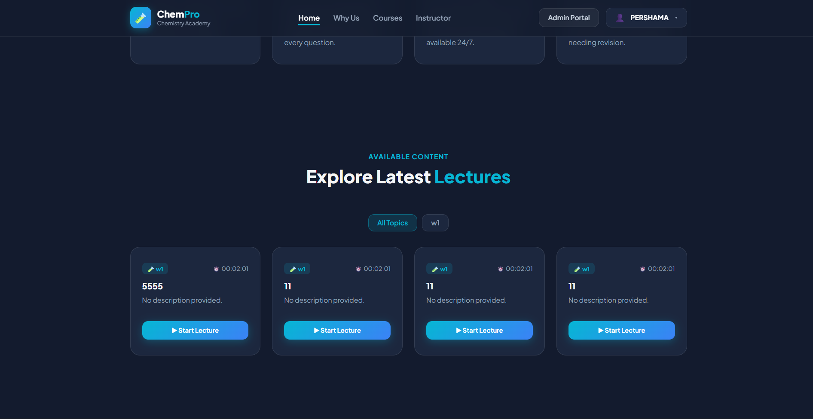
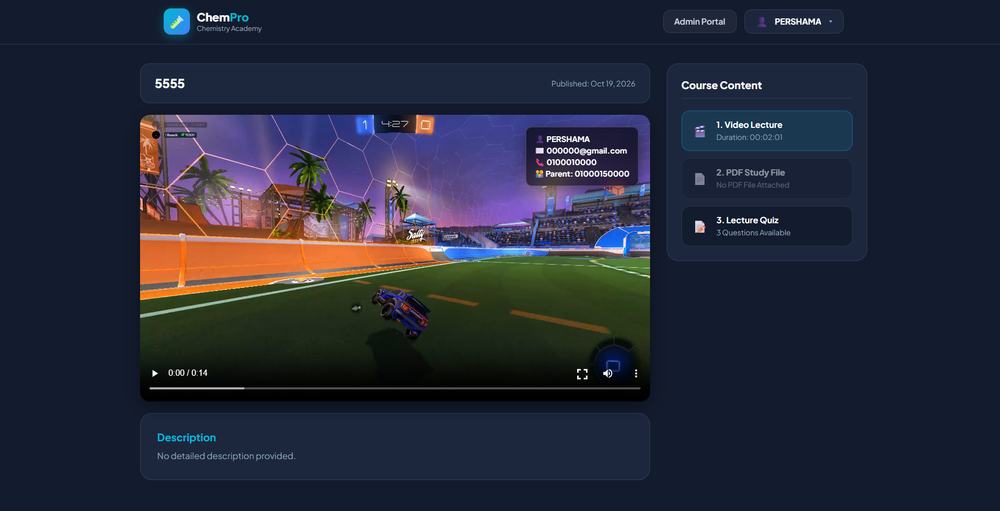
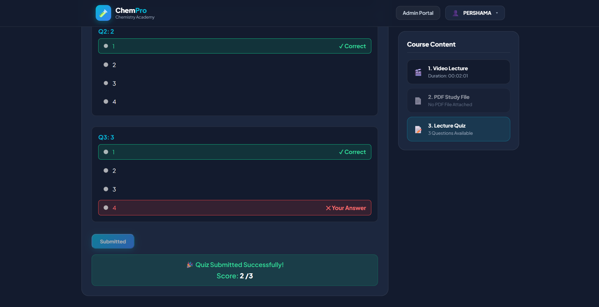
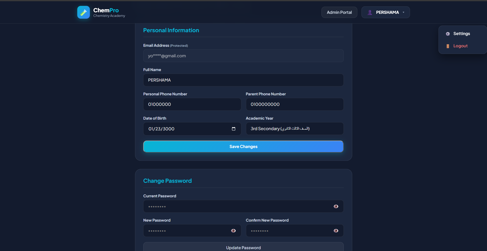
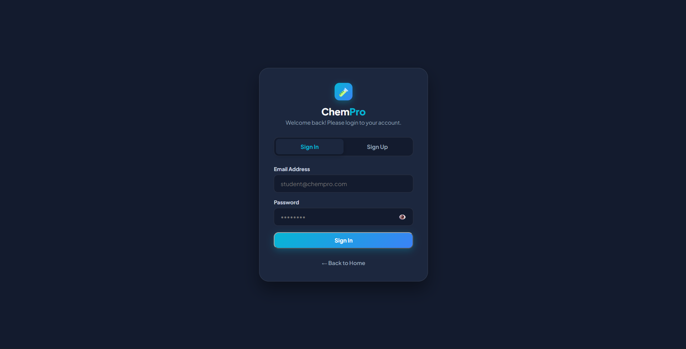
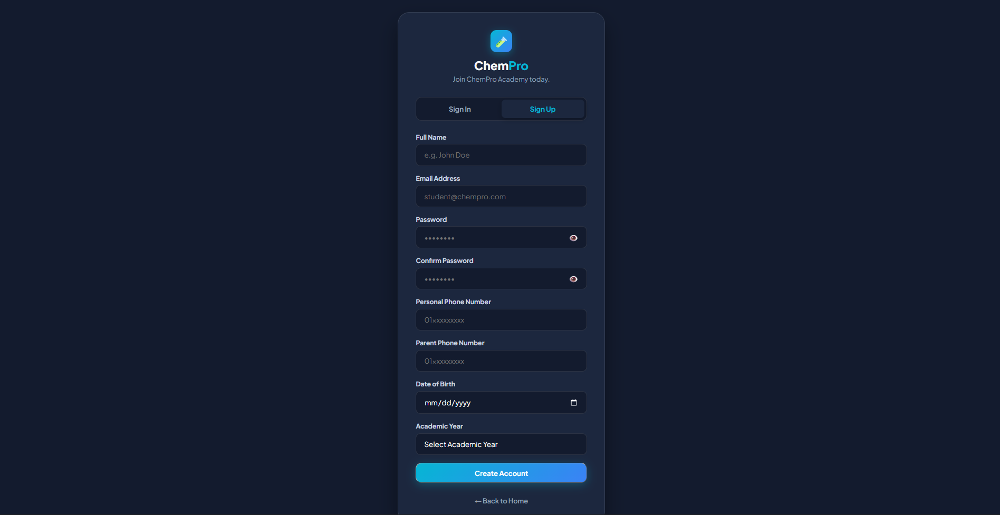
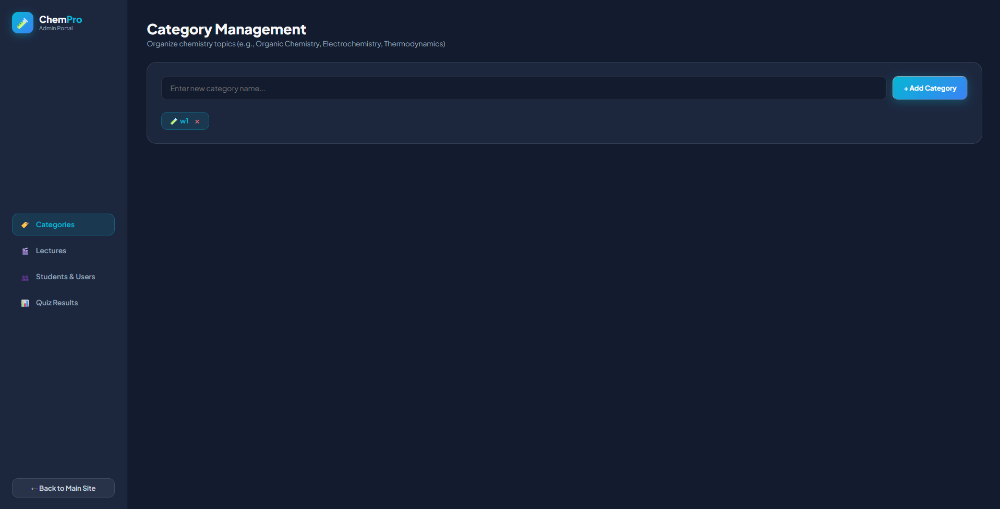
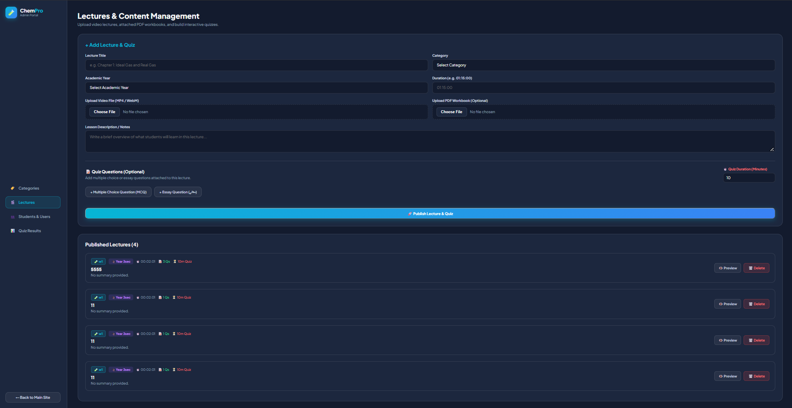
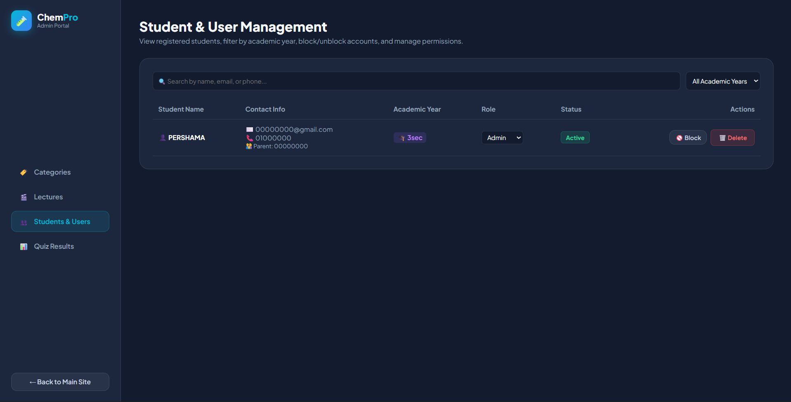
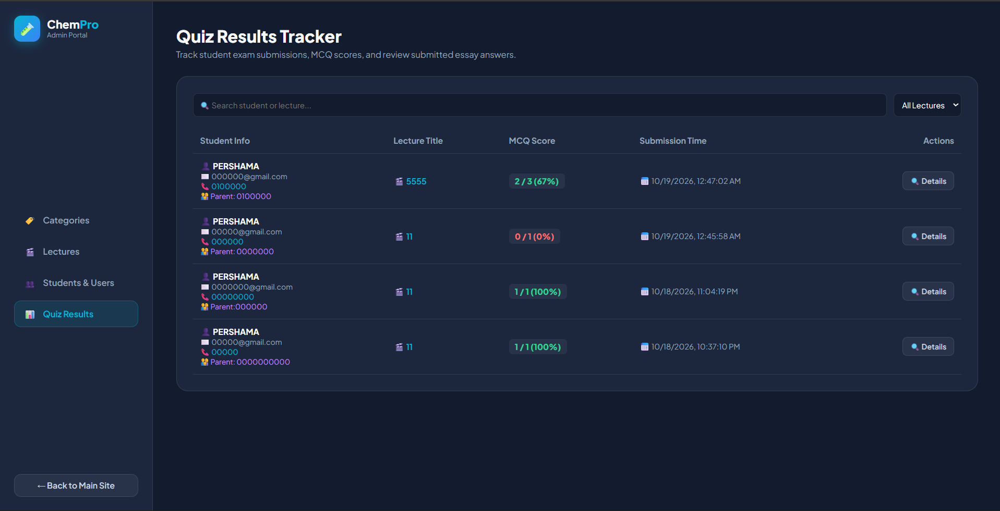

ChemPro Academy LMS & Web Viewer
A high-performance educational platform designed for online learning. Featuring custom video player controls, dynamic course management, security watermarking, and interactive student evaluation tools.

01 Student Landing & Dashboard Overview
Designed a clean, engaging student dashboard providing quick access to active courses, lecture progress tracking, and upcoming assignments with zero visual clutter.

02 Course Catalog & Lecture Exploration
The main student discovery hub: a clean, organized layout showcasing available lectures and categorized topics. Designed for intuitive navigation, students can effortlessly browse through subjects, check lecture durations, and launch learning sessions instantly.

03 Secure Video Lecture & Student Watermarking System
The core lecture view page, engineered with advanced security features including dynamic student identification watermarking embedded directly on the video player to prevent screen recording and content piracy. It also integrates comprehensive lecture descriptions, downloadable study materials, and direct access to associated quizzes.

04 Interactive Quiz & Automated Evaluation System
The interactive student assessment module: displays real-time auto-grading and answer evaluation for lecture quizzes. Students instantly receive their final score, visual markers for correct and incorrect answers, and a detailed breakdown to reinforce learning and track comprehension.

05 Student Account Settings & Profile Management
The student account configuration hub: allows students to view and update their personal information, academic year details, and contact numbers, alongside a secure password modification module to ensure complete control over their account security.

06 Secure Authentication & Sign In Portal
The secure entry point for the platform: a clean and responsive authentication gateway enabling students to sign in seamlessly with their credentials, ensuring protected and authorized access to their educational dashboard.

07 Student Registration & Account Creation Gateway
The student onboarding registration portal: designed to collect comprehensive user details required for account activation and security. As shown in the form, students provide their Full Name, Email Address, secure Password (with confirmation), Personal Phone Number, Parent Phone Number for emergency tracking, Date of Birth, and their specific Academic Year before hitting Create Account.

08 Admin Portal & Category Management Hub
The first restricted gateway in the teacher's admin portal: an intuitive category management dashboard that allows educators to create, organize, and manage course topics and curriculum sections dynamically, ensuring structured content delivery for students.

09 Lectures & Content Management Hub
The comprehensive content creation and publishing dashboard for educators: allows teachers to input lecture titles, assign categories and academic years, set durations, upload video files (MP4/WebM) and accompanying PDF workbooks, write detailed lesson notes, and build interactive quizzes with custom timers before publishing them instantly to the platform.

10 Student & User Management Dashboard
The centralized user control center for administrators: provides a complete overview of all registered accounts with advanced search and filtering options by academic year. Administrators can seamlessly manage user roles (such as assigning or revoking admin privileges), block unauthorized accounts to restrict access, and monitor student statuses to maintain complete platform security.

11 Quiz Results & Student Performance Tracker
The comprehensive examination analytics dashboard for educators: allows teachers to track student exam submissions in real-time, search by student name or lecture title, view individual MCQ scores and percentage grades, check exact submission timestamps, and inspect detailed answers to monitor student comprehension effectively.